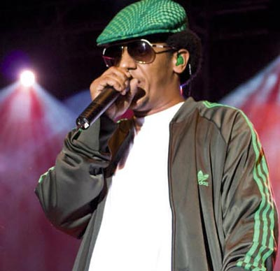
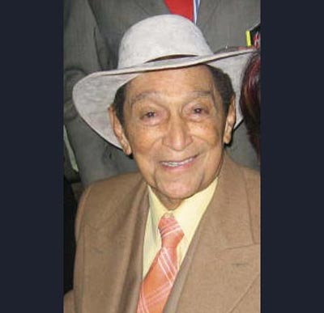
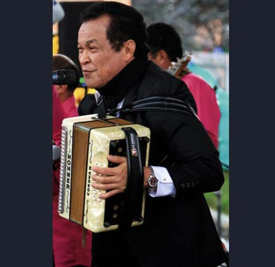
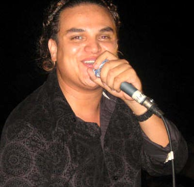
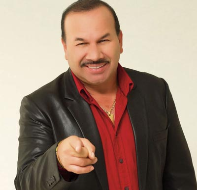
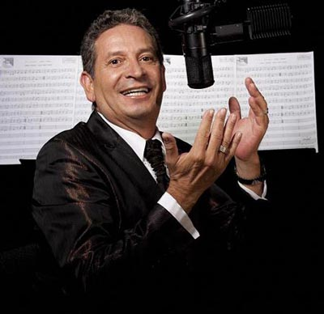
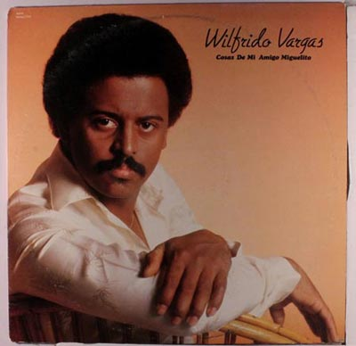
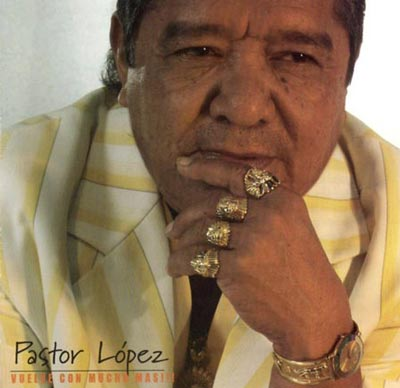
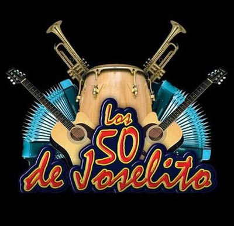

URBANA
Ritmos que ponen a bailar a cualquiera, al calor de una fiesta o con el ambiente de la playa, es irresistible no entrar en sintonía. Los ritmos que destacamos de este género son el Reggaetón, la Champeta y nos atrevemos a incluir el Pop Tropical.
Las raíces de cada ritmo, tienen diferencias como similitudes: la champeta y el reggaetón comparten sonidos latinos y africanos, pero al final todos se ven influenciados por el hip hop y la nueva era de los sonidos electrónicos.
Precursores:

Canción para enamorar: Esta canción tiene participación de varios exponentes de este género, que unidos a una sola voz buscan ayudarnos, con sus letras, a enamorar. Si es el momento de conquistar, ¡pídanle consejo a los que saben!
- Una cita Remix – Alkilados feat Nicky Jam, J Álvarez, Rookie
Canción que nos alegra la vida: No podemos cerrarnos a una sola canción y por eso nos atrevemos con varias,
que siempre que suenan es inevitable que los sentidos se despierten y la sangre se caliente, a bailar!
- La invité a bailar – Kevin Flórez
- Limbo – Daddy Yankee
- El serrucho – Mr. Black
- Deseo animal – Dálmata
Top 3
1. Ginza – J Balvin
2. La espeluca – Twister
3. Suele suceder – Piso 21 feat Nicky Jam
ARTISTA DEL MOMENTO:
J BALVIN
Por sus reconocimientos internacionales es el artista colombiano de este género más representativo. En la actualidad sus giras internacionales lo han catapultado a ser un referente del movimiento urbano a nivel mundial.
VALLENATO
El vallenato es un género musical autóctono de la Costa Caribe colombiana, su popularidad se ha extendido hoy a todas las regiones del país y países vecinos.
El vallenato es la música con mayor trascendencia en nuestro país porque además de representar nuestro origen, ha sido capaz de soportar la fuerza de la comercialización sin dejar de ser un auténtico representante del folclor colombiano.
Juglares vallenatos:

Canción para enamorar: Canción que inspira, canción que motiva, canción que toca fibras.
- Tan natural – Felipe Peláez
Canción que nos alegra la vida: Es muy difícil escoger una sola canción, pero sin lugar a dudas en este género tan propio de los colombianos estas tres canciones consideramos que son las que nos alegran la vida.
- La foto de los dos – Carlos Vives
- Me gusta – Silvestre Dangond
- La invitación – Jorge Celedón
Top 3
1. Las cosas de la vida – Carlos Vives
2. Gracias Señor – Jorge Celedón
3. Como lo hizo – Silvestre Dangond

ARTISTA DEL MOMENTO:
SILVESTRE DANGONG
Artista del momento: Ha creado un movimiento que revoluciona, y sin duda es el nombre más representativo del género en el momento.
POPULAR
El género Popular se ha dado a conocer a través de los años por su acogida especialmente en el Eje Cafetero y Antioquia. La letra de estas canciones son llamativas en muchas ocasiones por sus historias, ya que la mayoría de los casos los amantes de este género se sienten identificados.
Precursores:

Canción para enamorar:
Eres todo en mi vida – Darío Gómez
Canción que nos alegra la vida:
Dos razones – John Alex Castaño
Top 3
1. Amigos con derechos – Jhon Alex Castaño
2. Por andar de enamorado – Jhonny Rivera
3. Si se fue se fue – Francy
ARTISTA DEL MOMENTO:
PIPE BUENO
TROPICAL
Término genérico utilizado principalmente en los países americanos de habla hispana para referirse a las diversas variantes de la música creada en la región circundante al Mar Caribe. Nace de los ritmos provenientes de África y
engloba diversos géneros musicales como son: la salsa, la cumbia, la bachata, el merengue, el vallenato, el reggae, el ska y el bossanova, entre otros ritmos.
Precursores:

Canción para enamorar:
Loquito por ti – Pastor López
Canción que nos alegra la vida:
Así empezaron papá y mamá – Loco Quintero
Top 3
1. Matecaña – Borrachera
2. Los 50 Joselito – Pa‘Bailar
3. San Miguelito – El buen mozo

ARTISTA DEL MOMENTO:
LOS 50 DE JOSELITO